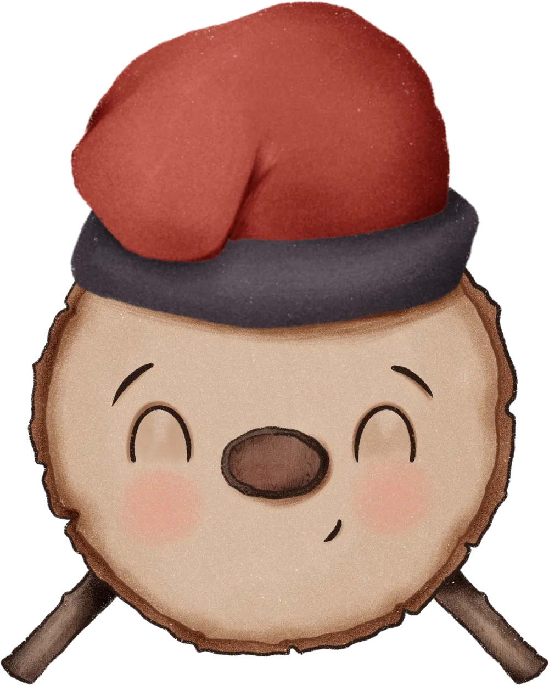
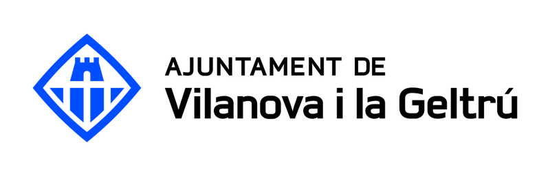
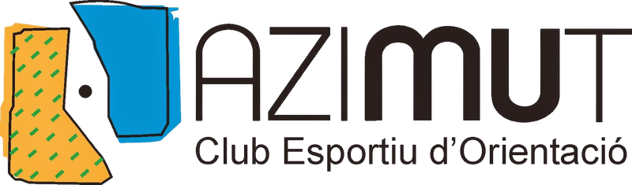
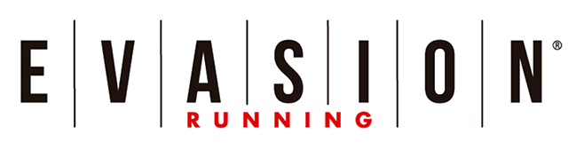

Una cursa d'orientació urbana per fer en família: mapa a la mà, targeta de control i tota la ciutat per buscar les fites.

La Cursa del Tió és una activitat que fomenta l'activitat esportiva familiar, impulsada per la Regidoria d'Esports de l'Ajuntament de Vilanova i la Geltrú i el Club Esportiu d'Orientació Azimut.
A la sortida, cada equip rep un mapa amb les fites marcades i una targeta de control per anar marcant els encerts. L'ordre i la direcció de la ruta els tria cada equip: aquí guanya l'estratègia, no només les cames.
A la plaça de les Casernes. La sortida és a les 9.30 h.
Per completar el recorregut.
Mínim 1 adult i 1 infant.
Completar totes les fites té premi.
Inscripció prèvia online. Places limitades a 400.
20 de desembre · 09.30 h · Plaça de les Casernes. Inscripcions obertes fins al 14 de desembre a les 12 h.


